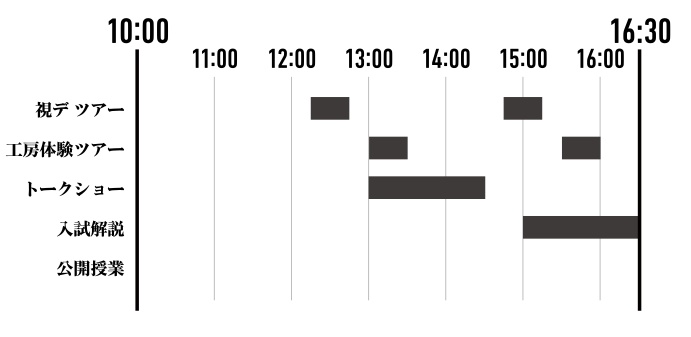
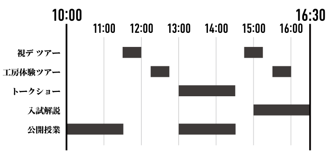

2018
DEPARTMENT OF
VISUAL COMMUNICATION DESIGN
OPEN CAMPUS 6.9[sat] .10[sun] [10:00–16:30]
武蔵野美術大学 視覚伝達デザイン学科
オープンキャンパス2018
視る、視る、実る。
現地へ足を運んで、
見て、聞き、嗅ぎ、触り、味わう。
五感全てで観察することが、視るということ。
私たちはそう考えています。
種が芽を出し実るように、
視ることによって成長し、視ることによって実を結ぶ。
みるみる実ろうとする私たちを視ていただければ幸いです。
そして、また次の種が実りますように。
Videos

CM

1,2年授業紹介
Timetable&Map
タイムスケジュール&マップ
6.9 sat
6.10 sun
Exhibition
作品展示
Building 10-3F
Building 8-2F
All Day
| １年生 | 8-203, 204 | 基礎造形「造形による対話・100枚ドローイング」 |
| ２年生 | 10-306 | 構成演習（通称：レシピ） |
| 10-305 | 視覚表現演習 | |
| 10-308 | 空間構成Ⅱ | |
| ３年生 | 10-310 | Ⅰ群授業 |
| 3, 4年生 | 10-311, 312 | Ⅱ群授業 |
| ４年生 | 10-309 | 卒業制作優秀作品 |
| 10-311, 312 | 卒業生・４年生による就活ポートフォリオ展示 | |
| 8-206B | 視デ アニメーション作品展示 |
入学から卒業までの授業成果作品を網羅。展示内容は、上記を予定しています。作品撮影や取り扱い方法など気になることがございましたら、お気軽にスタッフまでお声かけください。
Entrance Exam Explanation
学科紹介&入試解説
Building 1-104
15:00–16:30
今年の実技試験の課題意図や優秀作品について、本学科の専任教員と制作した１年生による制作意図や受験生時代のエピソードトークをお伝えします。また、別会場では今年の入試作品の実物を約60点、ディスプレイでは全合格作品をご覧頂けます。年に一度のまたとないチャンスですので、受験生のみなさんはもちろん、保護者の方もぜひお越しください。
Talk Show
トークショー
VCD Guest Talk Show [sat]
みんなちがって、みんな視デ
2016年度 卒業生4名が語る同窓会型トークショー
Building 1-104
6.9 sat: 13:00–14:30
VCD Professors
VCD Graduates
視覚伝達デザイン学科（以下、視デ）を卒業した卒業生の進路は、多種多様です。今回お呼びした卒業生4人が進んだのは、広告・デザイン事務所・web・食品メーカー。在校生、教授と共に視デについて語り合います。
VCD Guest Talk Show [sun]
視覚伝達デザイン学科トークショー
視デから10年。 寺山祐策×矢後直規×田中せり
Building 1-104
6.10 sun: 13:00–14:30
Yusaku Terayama
Naonori Yago
Seri Tanaka
広告業界の第一線で働き続ける視覚伝達デザイン学科卒業の二人をお招きし、本学科主任教授・寺山祐策先生と共に視デを卒業してからの10年間とこれからについて熱く語り合います。
Tour
ツアー
VCD Guide Tour
視デ ガイドツアー
Building 10-3F 中広場集合
6.9 sat: 12:15–12:45, 14:45–15:15
6.10 sun: 11:30–12:00, 14:45–15:15
視デの持つ教室や工房をガイドと共に巡り、展示作品や授業についてご紹介します！ 視デ生の生の声を通して、展示を見ただけではわからない視デのリアルを知ることができるツアーです。
Hands-On Studios Tour
工房体験ツアー
Building 10-3F 中広場集合
6.9 sat: 13:00–13:30, 15:30–16:00
6.10 sun: 12:15–12:45, 15:30–16:00
シルクスクリーンと活版印刷を体験しよう。これらの印刷は、視覚伝達デザイン学科の印刷技術に関する授業で実際に行っているものを気軽に楽しく体験できるよう企画しておりますので、事前の知識や準備など必要ありません。完成品はお持ち帰りいただけますので、ご来場の記念にぜひご参加ください。
Workshop
ワークショップ
Building 8-205
All Day
シルクスタンプ、段ボール工作を通して、楽しく視デの授業を体験しよう！ できた作品はお持ち帰りいただけるのでオープンキャンパスの記念にぜひご参加ください。参加費不要、終日開催。
Advice Corner
相談コーナー
Building 8-206A
All Day
受験生や保護者の方を対象に受験や進路に関する質問・相談に在学生がお答えします。受験対策でやったこと、入学後の学生生活について、授業との向き合い方などお気軽にご相談ください。また、別会場にて専任教員による相談コーナーも開催します。
Special
スペシャル企画
Building 10-3F 研究室前通路
Building 8-205
All Day
本学科の在学生にアンケート調査を行い、等身大の視デ生を様々な視点からご紹介します。
「一人暮らしの割合」や「長期休みの過ごし方」などの日常生活や、授業のこと、学内外での活動など、調査の結果はポスターや映像にて展示しています。
視デならでは、美大生ならではの調査結果をお楽しみください！
Open Class
公開授業
3rd Grade Open Class
３年 空間構成Ⅲ 公開授業
思い出パズル
Building 8-209, 210
6.10 sun: 10:00–11:30
ご入学前に視デの授業を体験いただけます。オープンキャンパスでは、本学科専任教員である齋藤啓子先生の授業を公開し、学科専門授業の楽しさを余すところなくお伝えします。受験生、保護者の方もぜひお越しください。
4th Grade Open Class
４年 斎藤ゼミ 公開授業
朝おきて、家をでるまで
Building 8-209, 210
6.10 sun: 13:00–14:30
60代から大学生世代までを招いて演劇ワークショップを行います。
世代を越えるコミュニケーションで当たり前だと思っている日常の新たな一面が見えてくるかもしれません。